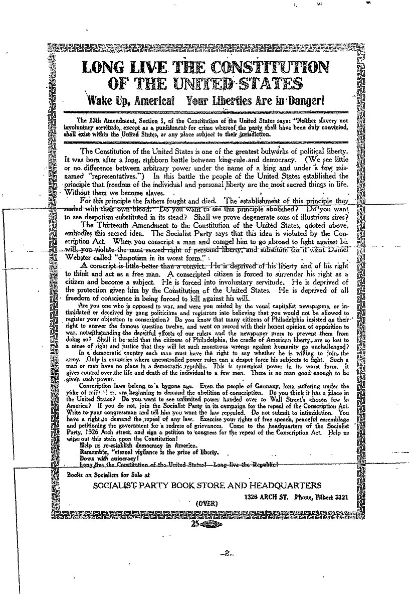

Schenk v. United States
Introduction/Facts of the case:
During World War I, two socialists, Charles Schenck and Elizabeth Baer, handed out flyers saying the draft went against the Thirteenth Amendment by forcing people into service. They encouraged people not to follow the draft but only through peaceful means. Schenck got charged with trying to create rebellion in the military and disrupt recruitment under the Espionage Act of 1917. Schenck and Baer were found guilty, and they appealed, arguing that the law violated the First Amendment.
| When did it start? |
Argued on: Jan 9-10th, 1919 |
| When was it decided? |
March 3rd, 1919 |
| Where? |
District court for the eastern district of Pennsylvania |
| Who? |
Charles Schenk |
Question raised?
Did Schenck's conviction under the Espionage Act for criticizing the draft violate his First Amendment right to freedom of speech?
What happened during the case?
In Schenck v. United States (1919), the Supreme Court said the Espionage Act of 1917 was okay and ruled that someone could not claim their right to free speech to oppose the draft in World War I. This case made the "clear and present danger" test, which was used until 1969 when the Brandenburg v. Ohio case set a higher bar, saying speech needed to lead to immediate unlawful action to not be protected.
What was the results?
The Court said the Espionage Act was okay and didn't break the First Amendment. Justice Oliver Wendell Holmes, speaking for the whole Court, said the government had more say during wartime, even if it meant putting constitutional rights at risk. He made the "clear and present danger" test, saying that the First Amendment doesn't protect speech that might seriously cause harm and that Congress can stop. Holmes thought the leaflets could mess up the conscription process. He famously compared them to yelling "Fire!" in a crowded theater, saying that's not allowed under the First Amendment.
To sum it up:
United States, 249 U.S. 47 (1919) If someone's words are meant to cause a crime and there's a real chance that it will lead to a crime happening, the First Amendment doesn't defend the speaker from government intervention.

|